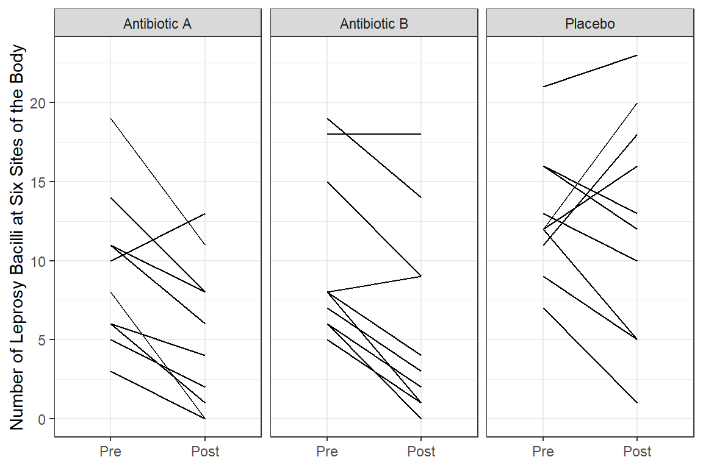
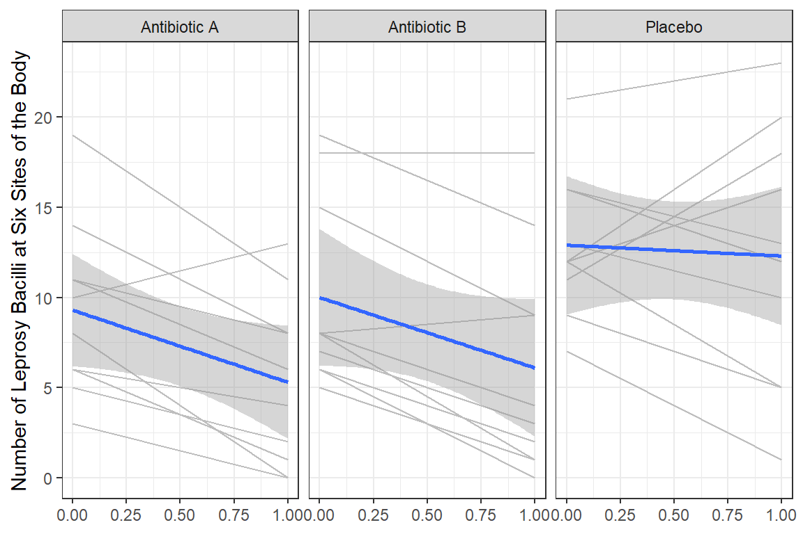
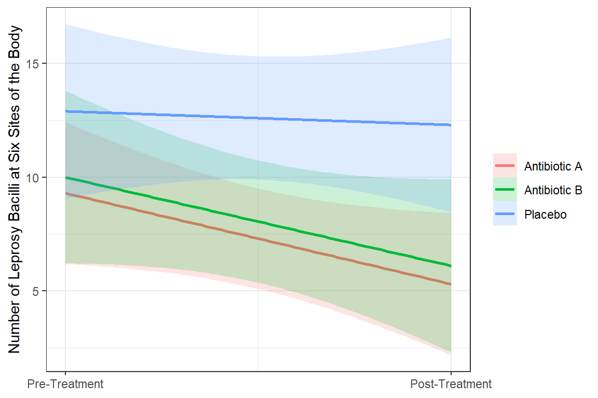
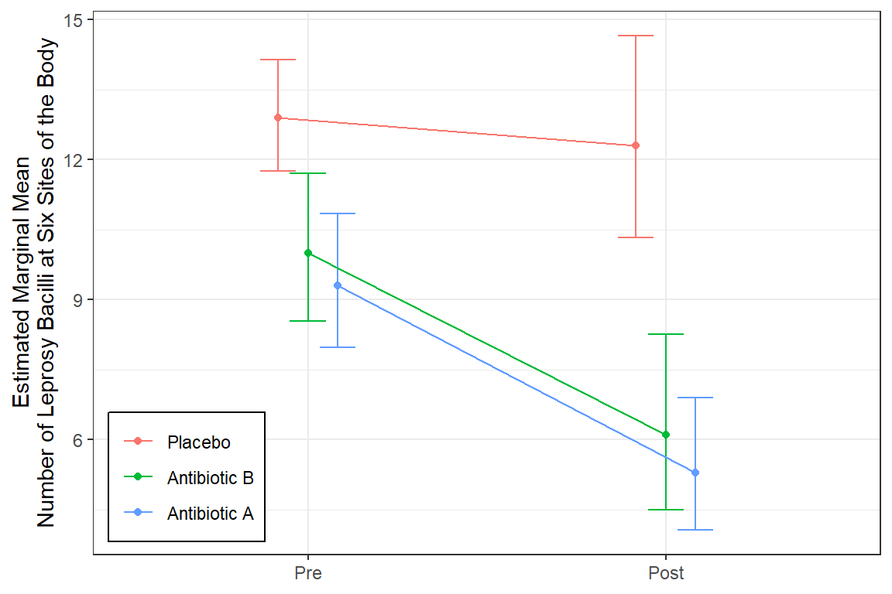
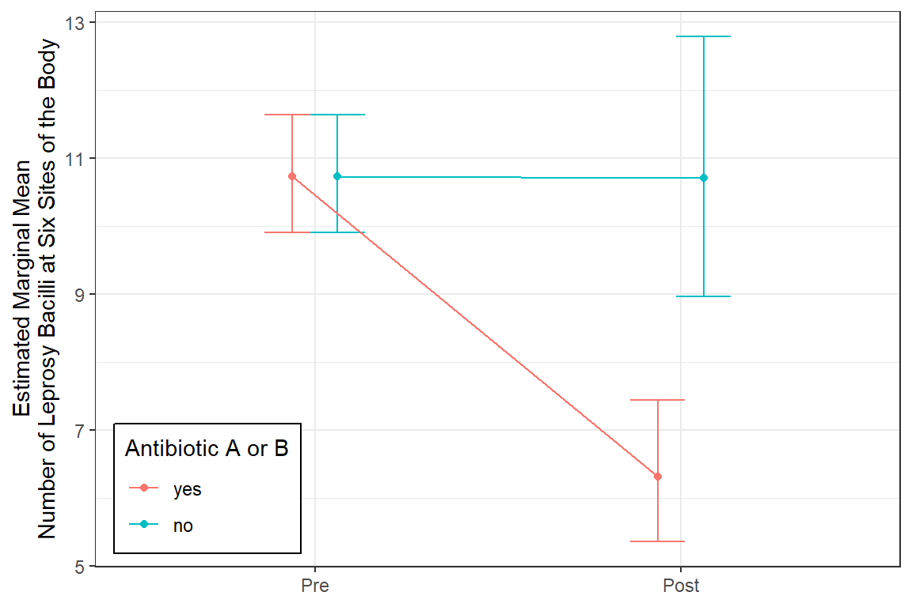

17 GEE, Count Outcome: Antibiotics for Leprosy
17.1 PREPARATION
17.1.1 Load Packages
install.packages("devtools")
devtools::install_github("sarbearschwartz/apaSupp") # updated 10/14/2025Load/activate these packages
17.1.2 Background
The following example is presented in the textbook: “Applied Longitudinal Analysis” by Garrett Fitzmaurice, Nan Laird & James Ware
The dataset maybe downloaded from: https://content.sph.harvard.edu/fitzmaur/ala/
Data on count of leprosy bacilli pre- and post-treatment from a clinical trial of antibiotics for leprosy.
Source: Table 14.2.1 (page 422) in Snedecor, G.W. and Cochran, W.G. (1967). Statistical Methods, (6th edn). Ames, Iowa: Iowa State University Press
With permission of Iowa State University Press.
Reference: Snedecor, G.W. and Cochran, W.G. (1967). Statistical Methods, (6th edn). Ames, Iowa: Iowa State University Press
The Background
The dataset consists of count data from a placebo-controlled clinical trial of 30 patients with leprosy at the Eversley Childs Sanitorium in the Philippines. Participants in the study were randomized to either of two antibiotics (denoted treatment drug A and B) or to a placebo (denoted treatment drug C).
Prior to receiving treatment, baseline data on the number of leprosy bacilli at six sites of the body where the bacilli tend to congregate were recorded for each patient. After several months of treatment, the number of leprosy bacilli at six sites of the body were recorded a second time. The outcome variable is the total count of the number of leprosy bacilli at the six sites.
The Research Question
In this study, the question of main scientific interest is whether treatment with antibiotics (drugs A and B) reduces the abundance of leprosy bacilli at the six sites of the body when compared to placebo (drug C).
The Data
Outcome or dependent variable(s)
count.prePre-Treatment Bacilli Countcount.postPost-Treatment Bacilli Count
Main predictor or independent variable of interest
drugthe treatment group: antibiotics (drugs A and B) or placebo (drug C)
17.1.3 Enter the data by hand!
df_raw <- tibble::tribble(
~drug, ~count_pre, ~count_post,
"A", 11, 6, "B", 6, 0, "C", 16, 13,
"A", 8, 0, "B", 6, 2, "C", 13, 10,
"A", 5, 2, "B", 7, 3, "C", 11, 18,
"A", 14, 8, "B", 8, 1, "C", 9, 5,
"A", 19, 11, "B", 18, 18, "C", 21, 23,
"A", 6, 4, "B", 8, 4, "C", 16, 12,
"A", 10, 13, "B", 19, 14, "C", 12, 5,
"A", 6, 1, "B", 8, 9, "C", 12, 16,
"A", 11, 8, "B", 5, 1, "C", 7, 1,
"A", 3, 0, "B", 15, 9, "C", 12, 20)17.1.4 Wide Format
df_wide <- df_raw %>%
dplyr::mutate(drug = factor(drug)) %>%
dplyr::mutate(id = row_number()) %>%
dplyr::select(id, drug, count_pre, count_post)tibble [30 × 4] (S3: tbl_df/tbl/data.frame)
$ id : int [1:30] 1 2 3 4 5 6 7 8 9 10 ...
$ drug : Factor w/ 3 levels "A","B","C": 1 2 3 1 2 3 1 2 3 1 ...
$ count_pre : num [1:30] 11 6 16 8 6 13 5 7 11 14 ...
$ count_post: num [1:30] 6 0 13 0 2 10 2 3 18 8 ...df_wide %>%
psych::headTail() %>%
flextable::flextable() %>%
apaSupp::theme_apa(caption = "Wide format of the Data")id | drug | count_pre | count_post |
|---|---|---|---|
1 | A | 11 | 6 |
2 | B | 6 | 0 |
3 | C | 16 | 13 |
4 | A | 8 | 0 |
... | ... | ... | |
27 | C | 7 | 1 |
28 | A | 3 | 0 |
29 | B | 15 | 9 |
30 | C | 12 | 20 |
17.1.5 Long Format
df_long <- df_wide %>%
tidyr::gather(key = obs,
value = count,
starts_with("count")) %>%
dplyr::mutate(time = case_when(obs == "count_pre" ~ 0,
obs == "count_post" ~ 1)) %>%
dplyr::select(id, drug, time, count) %>%
dplyr::arrange(id, time)tibble [60 × 4] (S3: tbl_df/tbl/data.frame)
$ id : int [1:60] 1 1 2 2 3 3 4 4 5 5 ...
$ drug : Factor w/ 3 levels "A","B","C": 1 1 2 2 3 3 1 1 2 2 ...
$ time : num [1:60] 0 1 0 1 0 1 0 1 0 1 ...
$ count: num [1:60] 11 6 6 0 16 13 8 0 6 2 ...df_long %>%
psych::headTail() %>%
flextable::flextable() %>%
apaSupp::theme_apa(caption = "Long format of the Data")id | drug | time | count |
|---|---|---|---|
1 | A | 0 | 11 |
1 | A | 1 | 6 |
2 | B | 0 | 6 |
2 | B | 1 | 0 |
... | ... | ... | |
29 | B | 0 | 15 |
29 | B | 1 | 9 |
30 | C | 0 | 12 |
30 | C | 1 | 20 |
17.2 Exploratory Data Analysis
17.2.1 Summary Statistics
df_long %>%
dplyr::group_by(drug, time) %>%
dplyr::summarise(N = n(),
M = mean(count),
VAR = var(count),
SD = sd(count)) %>%
flextable::as_grouped_data(groups = "drug") %>%
flextable::flextable() %>%
apaSupp::theme_apa(caption = "Summary for each group at each time")drug | time | N | M | VAR | SD |
|---|---|---|---|---|---|
A | |||||
0.00 | 10 | 9.30 | 22.68 | 4.76 | |
1.00 | 10 | 5.30 | 21.57 | 4.64 | |
B | |||||
0.00 | 10 | 10.00 | 27.56 | 5.25 | |
1.00 | 10 | 6.10 | 37.88 | 6.15 | |
C | |||||
0.00 | 10 | 12.90 | 15.66 | 3.96 | |
1.00 | 10 | 12.30 | 51.12 | 7.15 |
17.2.2 Visualize
df_long %>%
dplyr::mutate(time_name = case_when(time == 0 ~ "Pre",
time == 1 ~ "Post") %>%
factor(levels = c("Pre", "Post"))) %>%
dplyr::mutate(drug_name = fct_recode(drug,
"Antibiotic A" = "A",
"Antibiotic B" = "B",
"Placebo" = "C")) %>%
ggplot(aes(x = time_name,
y = count)) +
geom_line(aes(group = id)) +
facet_grid(.~ drug_name) +
theme_bw() +
labs(x = NULL,
y = "Number of Leprosy Bacilli at Six Sites of the Body")
df_long %>%
dplyr::mutate(time_name = case_when(time == 0 ~ "Pre",
time == 1 ~ "Post") %>%
factor(levels = c("Pre", "Post"))) %>%
dplyr::mutate(drug_name = fct_recode(drug,
"Antibiotic A" = "A",
"Antibiotic B" = "B",
"Placebo" = "C")) %>%
ggplot(aes(x = time,
y = count)) +
geom_line(aes(group = id),
color = "gray") +
geom_smooth(aes(group = drug),
method = "lm") +
facet_grid(.~ drug_name) +
theme_bw() +
labs(x = NULL,
y = "Number of Leprosy Bacilli at Six Sites of the Body")
df_long %>%
dplyr::mutate(time_name = case_when(time == 0 ~ "Pre",
time == 1 ~ "Post") %>%
factor(levels = c("Pre", "Post"))) %>%
dplyr::mutate(drug_name = fct_recode(drug,
"Antibiotic A" = "A",
"Antibiotic B" = "B",
"Placebo" = "C")) %>%
ggplot(aes(x = time,
y = count)) +
geom_smooth(aes(group = drug,
color = drug_name,
fill = drug_name),
method = "lm",
alpha = .2) +
theme_bw() +
labs(x = NULL,
y = "Number of Leprosy Bacilli at Six Sites of the Body",
color = NULL,
fill = NULL) +
scale_x_continuous(breaks = 0:1,
labels = c("Pre-Treatment", "Post-Treatment"))
17.3 Generalized Estimating Equations (GEE)
17.3.1 Explore Various Correlation Structures
17.3.1.1 Fit the models - to determine correlation structure
The gee() function in the gee package
mod_geeglm_ind <- geepack::geeglm(count ~ drug*time,
data = df_long,
family = poisson(link = "log"),
id = id,
waves = time,
corstr = "independence")
mod_geeglm_exc <- geepack::geeglm(count ~ drug*time,
data = df_long,
family = poisson(link = "log"),
id = id,
waves = time,
corstr = "exchangeable")
Call:
geepack::geeglm(formula = count ~ drug * time, family = poisson(link = "log"),
data = df_long, id = id, waves = time, corstr = "independence")
Coefficients:
Estimate Std.err Wald Pr(>|W|)
(Intercept) 2.2300 0.1536 210.74 <2e-16 ***
drugB 0.0726 0.2200 0.11 0.7415
drugC 0.3272 0.1791 3.34 0.0677 .
time -0.5623 0.1760 10.21 0.0014 **
drugB:time 0.0680 0.2460 0.08 0.7822
drugC:time 0.5147 0.2206 5.45 0.0196 *
---
Signif. codes: 0 '***' 0.001 '**' 0.01 '*' 0.05 '.' 0.1 ' ' 1
Correlation structure = independence
Estimated Scale Parameters:
Estimate Std.err
(Intercept) 3.13 0.513
Number of clusters: 30 Maximum cluster size: 2
Call:
geepack::geeglm(formula = count ~ drug * time, family = poisson(link = "log"),
data = df_long, id = id, waves = time, corstr = "exchangeable")
Coefficients:
Estimate Std.err Wald Pr(>|W|)
(Intercept) 2.2300 0.1536 210.74 <2e-16 ***
drugB 0.0726 0.2200 0.11 0.7415
drugC 0.3272 0.1791 3.34 0.0677 .
time -0.5623 0.1760 10.21 0.0014 **
drugB:time 0.0680 0.2460 0.08 0.7822
drugC:time 0.5147 0.2206 5.45 0.0196 *
---
Signif. codes: 0 '***' 0.001 '**' 0.01 '*' 0.05 '.' 0.1 ' ' 1
Correlation structure = exchangeable
Estimated Scale Parameters:
Estimate Std.err
(Intercept) 3.13 0.513
Link = identity
Estimated Correlation Parameters:
Estimate Std.err
alpha 0.735 0.081
Number of clusters: 30 Maximum cluster size: 2 17.3.1.2 Parameter Estimates
apaSupp::tab_gees(list("Independence" = mod_geeglm_ind,
"Exchangeable" = mod_geeglm_exc),
caption = "GEE - Estimates on Count Scale (RR)")
| Independence | Exchangeable | ||||
|---|---|---|---|---|---|---|
IRR | 95% CI | p | IRR | 95% CI | p | |
(Intercept) | 9.30 | [6.88, 12.57] | < .001*** | 9.30 | [6.88, 12.57] | < .001*** |
drug | ||||||
A | — | — | — | — | ||
B | 1.08 | [0.70, 1.65] | .741 | 1.08 | [0.70, 1.65] | .741 |
C | 1.39 | [0.98, 1.97] | .068 | 1.39 | [0.98, 1.97] | .068 |
time | 0.57 | [0.40, 0.80] | .001** | 0.57 | [0.40, 0.80] | .001** |
drug * time | ||||||
B * time | 1.07 | [0.66, 1.73] | .782 | 1.07 | [0.66, 1.73] | .782 |
C * time | 1.67 | [1.09, 2.58] | .020* | 1.67 | [1.09, 2.58] | .020* |
Note. | ||||||
* p < .05. ** p < .01. *** p < .001. | ||||||
17.3.2 Interpretation
Antibiotic A Group: Starts with mean of 9.3 and drops by 45% (nearly cut in half) over the course of treatment.
Antibiotic B Group: Starts at about the same mean at Antibiotic A group and experiences the same decrease.
Control Group (C): Starts at about the same mean at Antibiotic A group BUT experiences a less than a 5% decrease over the student period while on the placebo pills.
17.3.3 Visualize the Final Model
17.3.3.2 More Polished
drug time rate SE df lower.CL upper.CL
A 0 9.3 1.43 54 6.83 12.65
B 0 10.0 1.58 54 7.29 13.71
C 0 12.9 1.19 54 10.73 15.51
A 1 5.3 1.39 54 3.13 8.98
B 1 6.1 1.85 54 3.32 11.19
C 1 12.3 2.14 54 8.67 17.45
Covariance estimate used: vbeta
Confidence level used: 0.95
Intervals are back-transformed from the log scale drug time rate SE df lower.CL upper.CL
1 A 0 9.3 1.43 54 6.83 12.65
2 B 0 10.0 1.57 54 7.29 13.71
3 C 0 12.9 1.19 54 10.73 15.51
4 A 1 5.3 1.39 54 3.13 8.98
5 B 1 6.1 1.85 54 3.32 11.19
6 C 1 12.3 2.14 54 8.67 17.45mod_geeglm_exc %>%
emmeans::emmeans(~ drug*time,
type = "response",
level = .68) %>%
data.frame() %>%
dplyr::mutate(time_name = case_when(time == 0 ~ "Pre",
time == 1 ~ "Post") %>%
factor(levels = c("Pre", "Post"))) %>%
dplyr::mutate(drug_name = fct_recode(drug,
"Antibiotic A" = "A",
"Antibiotic B" = "B",
"Placebo" = "C")) %>%
ggplot(aes(x = time_name,
y = rate,
group = drug_name %>% fct_rev,
color = drug_name %>% fct_rev)) +
geom_errorbar(aes(ymin = lower.CL,
ymax = upper.CL),
width = .3,
position = position_dodge(width = .25)) +
geom_point(position = position_dodge(width = .25)) +
geom_line(position = position_dodge(width = .25)) +
theme_bw() +
labs(x = NULL,
y = "Estimated Marginal Mean\nNumber of Leprosy Bacilli at Six Sites of the Body",
color = NULL) +
theme(legend.position = c(0, 0),
legend.justification = c(-0.1, -0.1),
legend.background = element_rect(color = "black"))
17.4 Follow-up Analysis
17.4.2 Reduce the Model - gee::gee()
mod_geeglm_exc2 <- geepack::geeglm(count ~ antibiotic:time ,
data = df_remodel,
family = poisson(link = "log"),
id = id,
waves = time,
corstr = "exchangeable")
summary(mod_geeglm_exc2)
Call:
geepack::geeglm(formula = count ~ antibiotic:time, family = poisson(link = "log"),
data = df_remodel, id = id, waves = time, corstr = "exchangeable")
Coefficients:
Estimate Std.err Wald Pr(>|W|)
(Intercept) 2.37335 0.08014 877 < 2e-16 ***
antibioticyes:time -0.53068 0.11306 22 2.7e-06 ***
antibioticno:time -0.00286 0.15700 0 0.99
---
Signif. codes: 0 '***' 0.001 '**' 0.01 '*' 0.05 '.' 0.1 ' ' 1
Correlation structure = exchangeable
Estimated Scale Parameters:
Estimate Std.err
(Intercept) 3.23 0.52
Link = identity
Estimated Correlation Parameters:
Estimate Std.err
alpha 0.738 0.081
Number of clusters: 30 Maximum cluster size: 2 17.4.3 Compare Parameters
| Original | Refit | ||||
|---|---|---|---|---|---|---|
IRR | 95% CI | p | IRR | 95% CI | p | |
(Intercept) | 9.30 | [6.88, 12.57] | < .001*** | 10.73 | [9.17, 12.56] | < .001*** |
drug | ||||||
A | — | — | ||||
B | 1.08 | [0.70, 1.65] | .741 | |||
C | 1.39 | [0.98, 1.97] | .068 | |||
time | 0.57 | [0.40, 0.80] | .001** | |||
drug * time | ||||||
B * time | 1.07 | [0.66, 1.73] | .782 | |||
C * time | 1.67 | [1.09, 2.58] | .020* | |||
antibiotic * time | ||||||
yes * time | 0.59 | [0.47, 0.73] | < .001*** | |||
no * time | 1.00 | [0.73, 1.36] | .985 | |||
Note. | ||||||
* p < .05. ** p < .01. *** p < .001. | ||||||
17.4.4 Interpretation
The grand mean is a count of 10.73 at pre-treatment.
The mean count dropped by about 40% among those on antibiotics, but there was no decrease for those on placebo pills, exp(b) = 0.592, p < .05, 95% CI [0.476, 0.74].
17.4.5 Visualize
17.4.5.2 More Polished
mod_geeglm_exc2 %>%
emmeans::emmeans(~ antibiotic*time,
type = "response",
level = .68) %>%
data.frame() %>%
dplyr::mutate(time_name = case_when(time == 0 ~ "Pre",
time == 1 ~ "Post") %>%
factor(levels = c("Pre", "Post"))) %>%
ggplot(aes(x = time_name,
y = rate,
group = antibiotic,
color = antibiotic)) +
geom_errorbar(aes(ymin = lower.CL,
ymax = upper.CL),
width = .3,
position = position_dodge(width = .25)) +
geom_point(position = position_dodge(width = .25)) +
geom_line(position = position_dodge(width = .25)) +
theme_bw() +
labs(x = NULL,
y = "Estimated Marginal Mean\nNumber of Leprosy Bacilli at Six Sites of the Body",
color = "Antibiotic A or B") +
theme(legend.position = c(0, 0),
legend.justification = c(-0.1, -0.1),
legend.background = element_rect(color = "black"))
$emmeans
antibiotic = yes:
time emmean SE df lower.CL upper.CL
0 2.37 0.0801 57 2.21 2.53
1 1.84 0.1640 57 1.51 2.17
antibiotic = no:
time emmean SE df lower.CL upper.CL
0 2.37 0.0801 57 2.21 2.53
1 2.37 0.1770 57 2.02 2.73
Covariance estimate used: vbeta
Results are given on the log (not the response) scale.
Confidence level used: 0.95
$contrasts
antibiotic = yes:
contrast estimate SE df t.ratio p.value
time0 - time1 0.531 0.113 57 4.690 <0.0001
antibiotic = no:
contrast estimate SE df t.ratio p.value
time0 - time1 0.003 0.157 57 0.020 0.9860
Results are given on the log (not the response) scale. mod_geeglm_exc2 %>%
emmeans::emmeans(pairwise ~ time | antibiotic,
type = "response",
adjust = "none")$emmeans
antibiotic = yes:
time rate SE df lower.CL upper.CL
0 10.73 0.86 57 9.14 12.60
1 6.31 1.03 57 4.55 8.76
antibiotic = no:
time rate SE df lower.CL upper.CL
0 10.73 0.86 57 9.14 12.60
1 10.70 1.90 57 7.50 15.27
Covariance estimate used: vbeta
Confidence level used: 0.95
Intervals are back-transformed from the log scale
$contrasts
antibiotic = yes:
contrast ratio SE df null t.ratio p.value
time0 / time1 1.7 0.192 57 1 4.690 <0.0001
antibiotic = no:
contrast ratio SE df null t.ratio p.value
time0 / time1 1.0 0.158 57 1 0.020 0.9860
Tests are performed on the log scale 17.5 Conclusion
The Research Question
In this study, the question of main scientific interest is whether treatment with antibiotics (drugs A and B) reduces the abundance of leprosy bacilli at the six sites of the body when compared to placebo (drug C).
The Conclusion
Both of these antibiotics significantly reduce leprosy bacilli from the pre-level (M = 10.7, equivalent groups at baseline) to lower (M = 6.3), compared to no change seen when on the placebo.